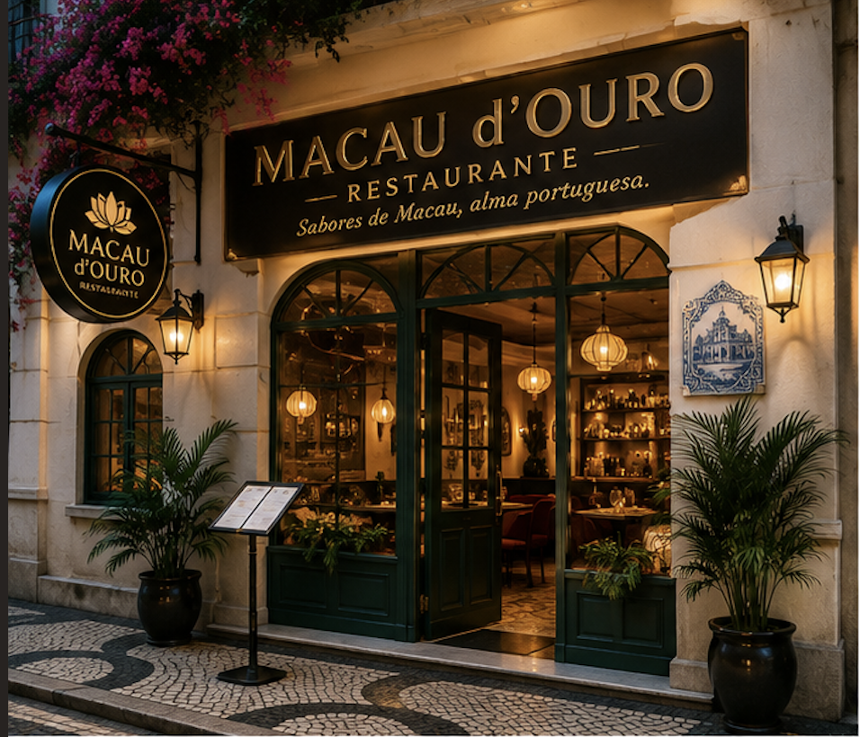
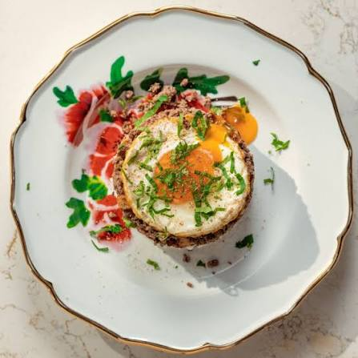
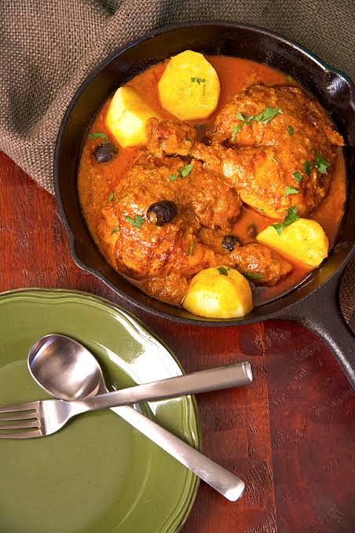
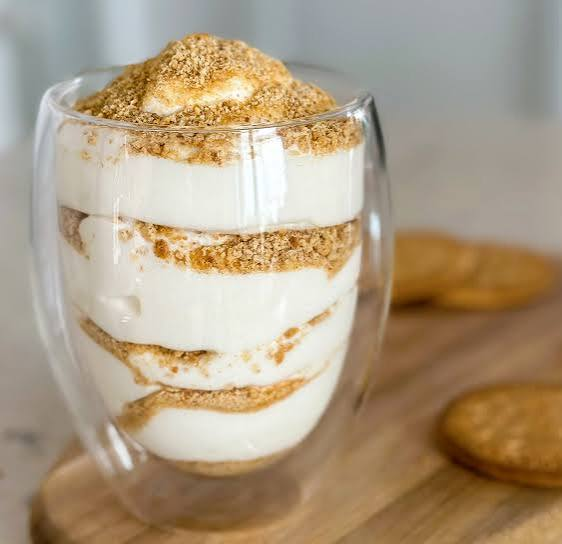
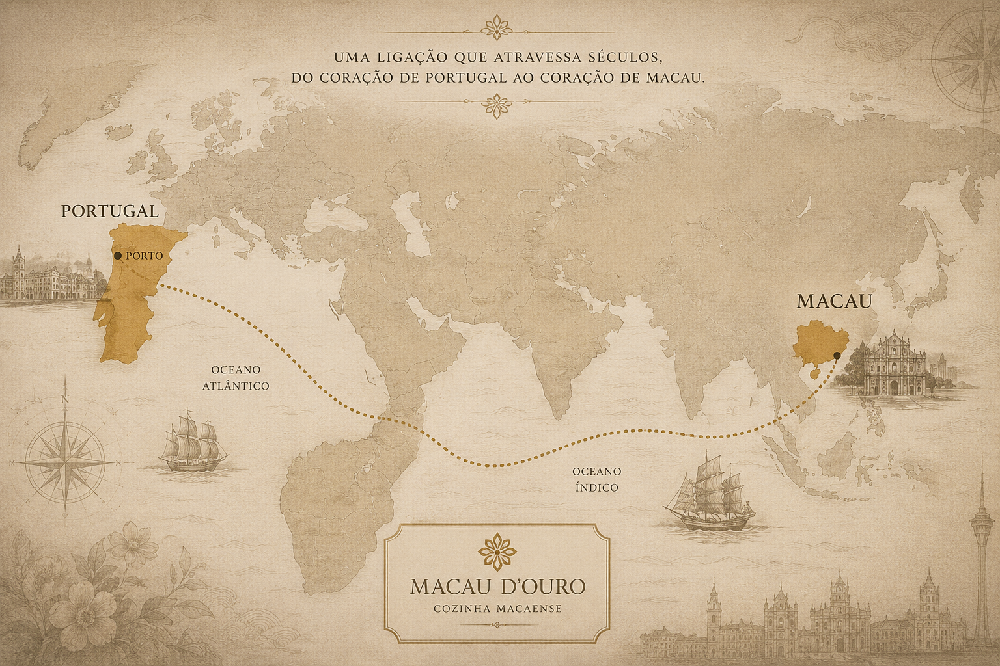

Uma experiência entre Portugal e Macau.
O Macau d'Ouro nasceu no Porto para homenagear uma das gastronomias mais fascinantes do mundo. Cada prato conta uma história onde Oriente e Ocidente se encontram à mesa.
Descobrir maisOs nossos pratos

Minchi
Carne picada, batata frita, ovo estrelado e molho tradicional.

Galinha Africana
O prato mais emblemático da cozinha macaense.

Serradura
Uma sobremesa clássica, cremosa e irresistível.
Sabores com História
Inspirado na herança deixada por Portugal em Macau, o Macau d'Ouro pretende oferecer uma viagem gastronómica onde tradição, elegância e autenticidade convivem.

Reserve a sua mesa.
Descubra uma experiência única, onde os sabores de Macau encontram a alma portuguesa.
Reservar